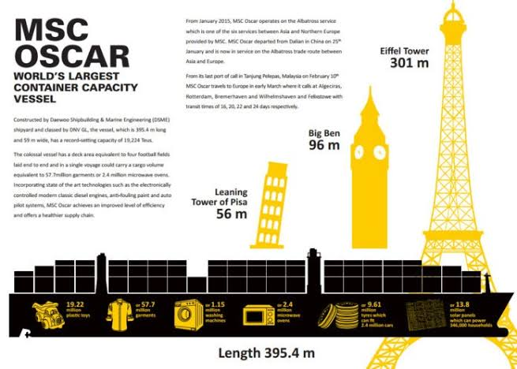
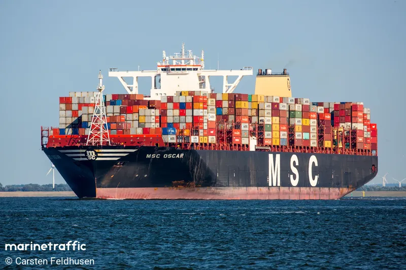
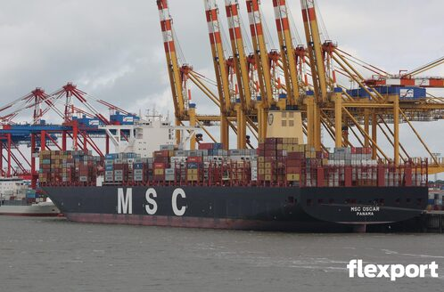

Overview
Christened on 8 January 2015, MSC Oscar was recognised as the largest container ship in the world; until then CSCL Globe, inaugurated in November 2014, had been the largest. She earned her name from the son of her CEO and owner of the Mediterranean Shipping Company.

Ship specs
- Title: MV
- Owner: Mediterranean Shipping Company
- Operator: Mediterranean Shipping Company
- Home port: Unknown, Panama
- Builder: Daewoo Shipbuilding & Marine Engineering
- launch date: December 2014
- Call sign: 3FBT7
- Length: 1297 feet
- Beam: 194 feet

Her work
The Oscar first planned for 18,400 TEU. Upon completion of construction her capacity was 19,224 TEU, including the capacity for 1,800 refrigerated containers. As the deadweight tonnage of the ship is 197,362 DWT, she can only carry a full load of containers if each has a mean weight not exceeding 10.2 tons. With average 14-ton containers, her capacity is around 14,000 TEU
S.O.S! S.O.S!
There are no major records or reports of any significant accident, collision, or fires involving the MSC Oscar.
